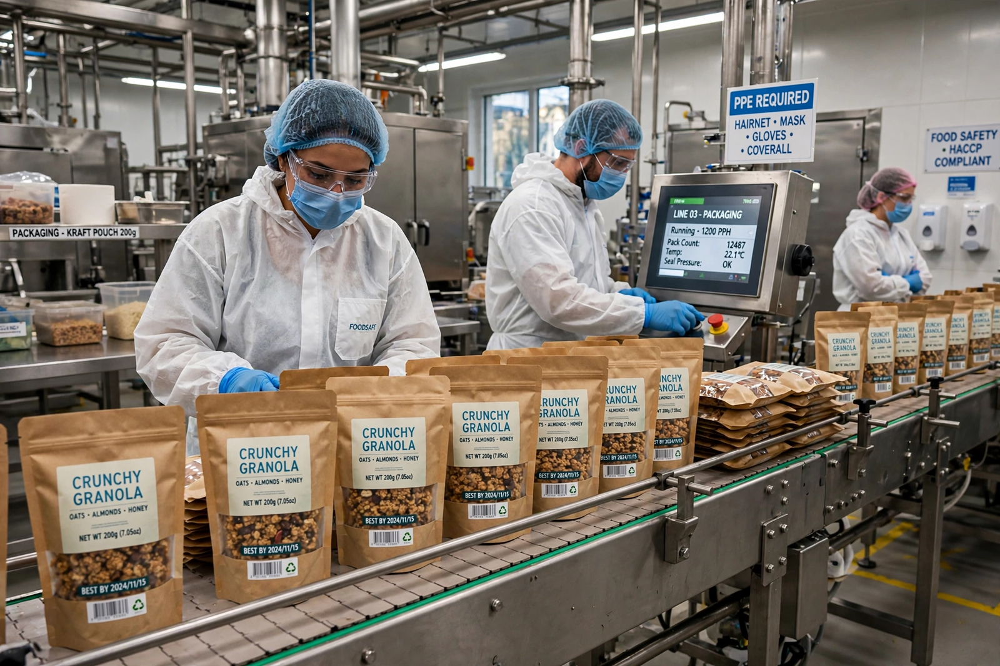

Food industry
From Wikipedia, the free encyclopedia

The food industry is the global complex of businesses that produce, process, distribute and sell the world's food — from farm input suppliers and commodity traders through processors, manufacturers, wholesalers, supermarkets, restaurants and delivery platforms. It is among the largest economic activities on Earth, employing a large share of the world's workforce when farming is counted. Its modern form was assembled in the 19th and 20th centuries: canning, refrigeration, railways and supermarkets turned local food economies into supply chains, and a handful of firms — Nestlé (the largest food company by revenue), PepsiCo, JBS, Tyson Foods, Unilever and the great commodity traders — came to sit at chokepoints of the system.
Structure and revolutions
Three revolutions built the industry. First, preservation (canning, freezing, pasteurisation) freed food from season and place. Second, retail: Clarence Saunders's self-service Piggly Wiggly (1916) and the postwar supermarket replaced the grocer's counter with the shopping cart, shifting power from manufacturers to retailers big enough to dictate terms and launch private labels. Third, logistics and data: barcodes, containerised cold chains and just-in-time distribution let a green bean be picked in Kenya and shelved in London within days. Fast food industrialised the kitchen in parallel, franchising standardised production to the franchisee's fry station.
Criticisms and change
The industry's efficiency is also the charge sheet: concentrated markets, ultra-processed products engineered for overconsumption, antibiotic-fed livestock, precarious farm and warehouse labour, and supply chains whose opacity shows in crises — as when the 2013 European horsemeat scandal revealed beef products containing horse passed through a half-dozen countries and companies. Regulators, retailers and activists contest labelling, marketing to children, sugar and salt levels, and environmental cost; the industry's newer chapters (plant-based and cultivated proteins, vertical farms, delivery apps) are being written by startups and incumbents racing each other.